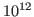

Lorenz John
Robust parallel hierarchical hybrid multigrid methods for the Stokes equations
Lehrstuhl für Numerische Mathematik
Technische Universität München
Boltzmannstraße 3
85748 Garching bei München (Germany)
john@ma.tum.de
Markus Huber
Björn Gmeiner
Ulrich Rüde
Barbara Wohlmuth
In this talk we present robust multigrid methods for the Stokes equations
on hierarchical hybrid grids (HHG). The special design of the method,
i.e., a compromise of structured and unstructured grids, fits the
flexibility of finite elements and the efficiency of geometric multigrid
methods. It provides excellent scalability up to a million parallel
threads and can solve in excess of 
unknowns in less than 2
minutes computing time on state of-the-art supercomputers. In particular,
three types of solvers are presented and compared to each other with
respect to the time to solution as well as operator applications. Namely,
a Schur complement CG and the Krylov subspace method MINRES which is
preconditioned by a block diagonal preconditioner, consisting of a
parallel multigrid and a lumped mass matrix. Further, we investigate
so-called all at once solution techniques. In this particular case
Uzawa-type smoothers have been found to be an attractive choice, since
they are numerically cheap and can be implemented with only
nearest-neighbour communication.
An important observation is the number of operator applications within
the solution process. Here we discover that the numbers for the Schur
complement CG and the MINRES with block diagonal preconditioning are
similar, while the Uzawa–MG profoundly profits from the comparatively
fewer applications. These numbers are also reflected in the time to
solution for the individual solvers.
Several numerical examples illustrate the performance of the presented
methods. Moreover, an application to Earth mantle convection problems
will be given.
mario
2015-02-01